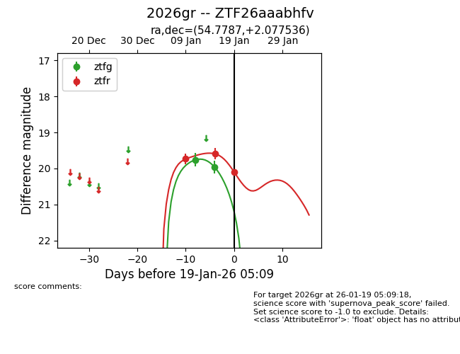
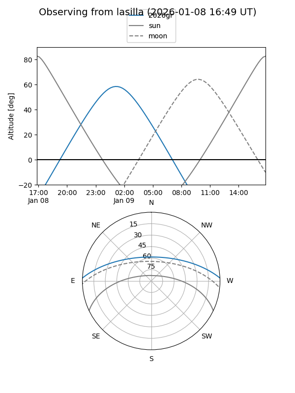
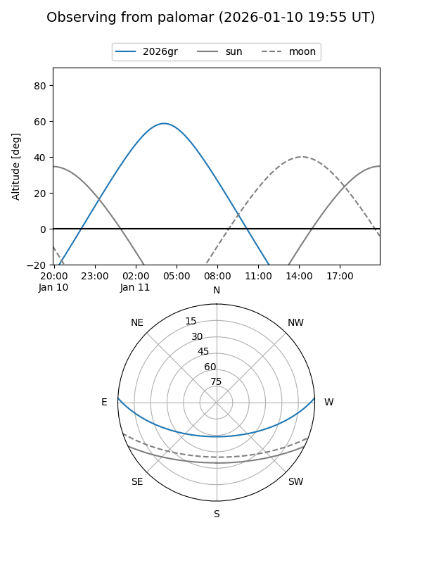
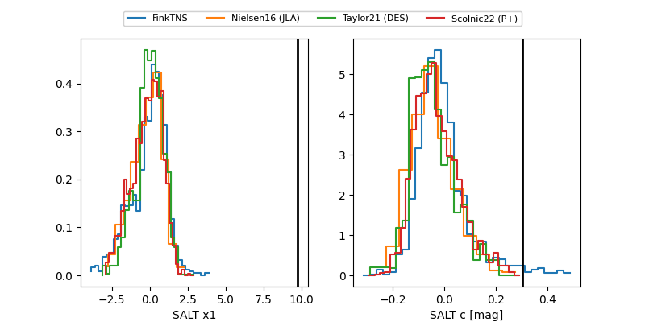

2026gr
Target 2026gr at 2026-01-19 05:50
Aliases and brokers:
FINK: link
Lasair: link
ALeRCE: link
TNS: link
YSE: link
alt names
ZTF26aaabhfv (ztf,fink_ztf)
2026gr (tns,yse)
Coordinates:
equatorial (ra, dec) = 54.7787,+2.07754
equatorial (HMS+DMS) = 03:39:06.90,+02:04:39.13
galactic (l, b) = (183.8498,-40.18539)
Flags:
Photometry:
last ztfg=19.81, ztfr=20.09
3 ztfg, 3 ztfr detections
Lightcurve

Visibility


Additional plots
